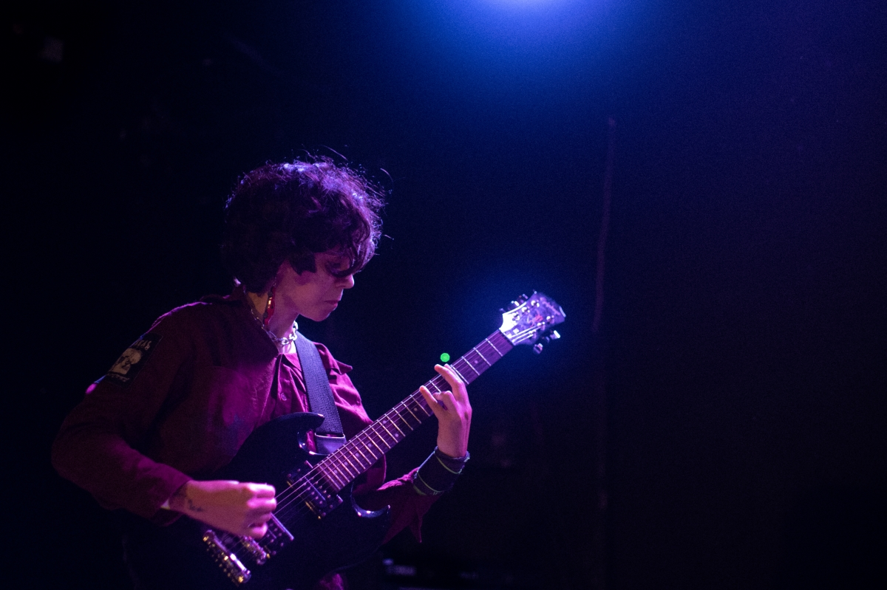
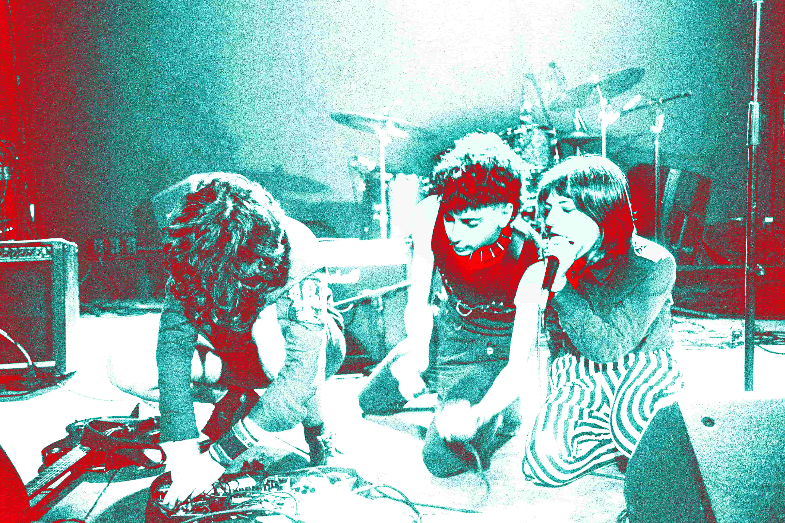
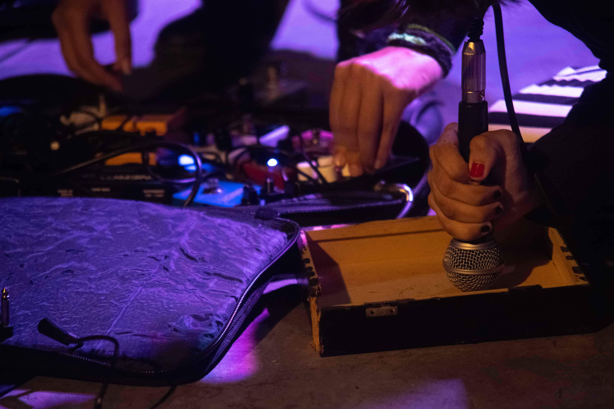
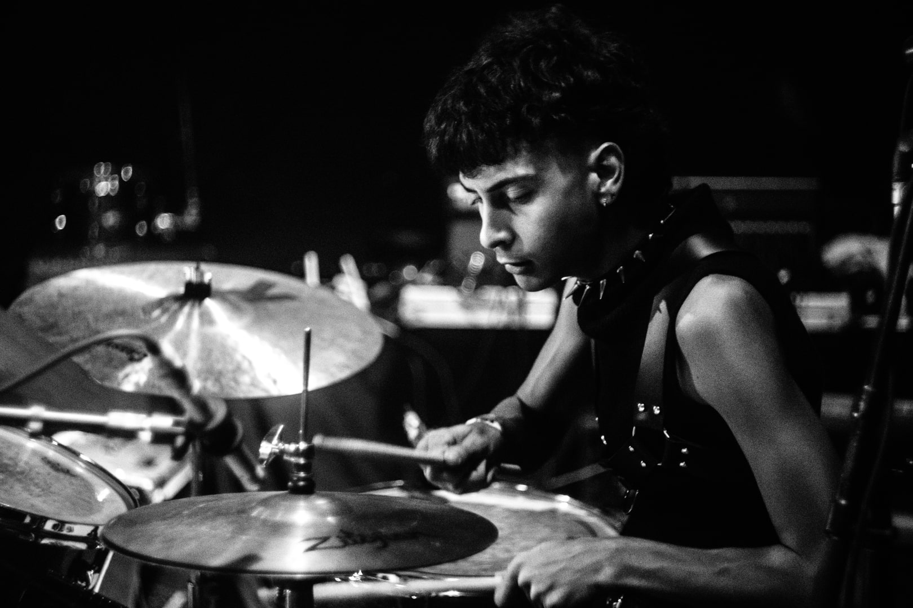

O projeto experimental Mãe Que Dá Medo é um duo de rock que combina os gêneros harsh noise, metal e música eletrônica.
É composto por Gabi @ffffff.ffffff.fff na guitarra e Mafra @ma._.fra na bateria.
A principal intenção da dupla é explorar a música a fundo enquanto som, não se baseando somente na teoria musical, mas sim no material sonoro em sua totalidade, dissonâncias, distorções, improvisação e, principalmente, ruídos.
Os últimos lançamentos são a performance em formato de live realizada pela produtora "Soneca!" e os singles intitulados “Inutilidade Não Performada” e “Maceió Megaton”, colaborações com Vitor Brauer e Julia Soares.
A banda se encontra em estúdio para o lançamento de um álbum inédito em 2023.
- 
- 
- 
- 